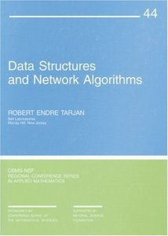
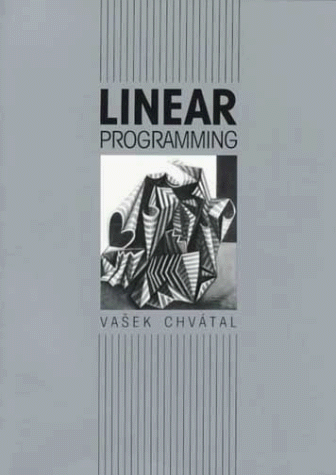

Lecture Slides for Algorithm Design
These are a revised version of the lecture slides
that accompany the textbook
Algorithm Design
by Jon Kleinberg and Éva Tardos.
Here are the original and official version of the
slides, distributed by
Pearson.
| TOPIC | SLIDES | READINGS | DEMOS |
|---|---|---|---|
| Stable Matching (Gale–Shapley) |
1up · 4up | Chapter 1 | Gale–Shapley |
| Algorithm Analysis (big O notation) |
1up · 4up | Chapter 2 | binary search |
| Graphs (graph search) |
1up · 4up | Chapter 3 | – |
| Greedy Algorithms I (basic techniques) |
1up · 4up | Chapter 4 | interval scheduling interval partitioning |
| Greedy Algorithms II (shortest paths and MSTs) |
1up · 4up | Chapter 4 | Dijkstra Prim, Kruskal, Borůvka Edmonds |
| Divide and Conquer I (sorting and selection) |
1up · 4up | Chapter 5 | merging quickselect |
| Divide and Conquer II (integer and polynomial multiplication) |
1up · 4up | Chapter 5 | – |
| Dynamic Programming I (basic techniques) |
1up · 4up | Chapter 6 | – |
| Dynamic Programming II (sequence alignment, Bellman–Ford) |
1up · 4up | Chapter 6 | – |
| Network Flow I (maximum flow theory) |
1up · 4up | Chapter 7 | Ford–Fulkerson |
| Network Flow II (maximum flow applications) |
1up · 4up | Chapter 7 | – |
| Network Flow III (assignment problem) |
1up · 4up | Chapter 7 | – |
| Intractability I (polynomial-time reductions) |
1up · 4up | Chapter 8 | – |
| Intractability II (P, NP, and NP-complete) |
1up · 4up | Chapter 8 | – |
| Intractability III (coping with intractability) |
1up · 4up | Section 10.2, 11.8 | independent set vertex cover |
| PSPACE (PSPACE complexity class) |
1up · 4up | Chapter 9 | – |
| Limits of Tractability (extending limits of tractability) |
1up · 4up | Chapter 10 | – |
| Approximation Algorithms (approximation algorithms) |
1up · 4up | Chapter 11 | list scheduling |
| Local Search (Metropolis, Hopfield nets) |
1up · 4up | Chapter 12 | – |
| Randomized Algorithms (randomized algorithms) |
1up · 4up | Chapter 13 | – |
| Data Structures I (amortized analysis) |
1up · 4up | Chapter 17 (CLRS) |
dynamic table |
| Data Structures II (binary and binomial heaps) |
1up · 4up | Chapter 6 (CLRS, 2nd edition) |
binary heap heapify |
| Data Structures III (Fibonacci heaps) |
1up · 4up | Chapter 19 (CLRS) |
– |
| Data Structures IV (union–find) |
1up · 4up | Section 5.1.4 (Dasgupta et al.) |
– |
| Linear Programming I (simplex algorithm) |
1up · 4up | (Chvátal) | – |
| Linear Programming II (linear programming duality) |
1up · 4up | (Chvátal) | – |
| Linear Programming III (ellipsoid algorithm) |
1up · 4up | Lecture notes (Michel Goemans) |
– |
References.
The lectures slides are based primarily on the textbook:- Algorithm Design by Jon Kleinberg and Éva Tardos. Addison-Wesley, 2005.
- Introduction to Algorithms, Third Edition by Thomas Cormen, Charles Leiserson, Ronald Rivest, and Clifford Stein. MIT Press, 2009.
- Algorithms by Sanjoy Dasgupta, Christos Papadimitriou, and Umesh Vazirani. McGraw Hill, 2006.
- The Design and Analysis of Algorithms by Dexter Kozen. Springer, 1992.
- Algorithms 4/e by Robert Sedgewick and Kevin Wayne. Addison-Wesley Professional, 2011.
- Data Structures and Network Algorithms by Robert Tarjan. Society for Industrial and Applied Mathematics, 1987.
- Linear Programming by Vašek Chvátal. W. H. Freeman, 1983.

|

|

|  |  |
Instructors.
If you are an instructor using the textbook and would like the latest version of the keynote source files, please email Kevin Wayne.
Errata.
Here are the known errata in these lecture slides.
Credits.
Special thanks to Pierre Flener, for finding and reporting dozens of errors and suggesting numerous improvements in the presentation.